Nous exprimons notre gratitude à Mme Jaouhari Ouafaa, notre encadrante au sein de l'Office National des Aéroports, pour son accompagnement, ses orientations et sa compréhension des enjeux opérationnels liés à la disponibilité des réseaux aéroportuaires. Nous remercions également Mme Khadija Bousmar, notre encadrante pédagogique à l'EMSI, pour son suivi méthodologique et ses remarques qui ont contribué à structurer ce travail.
Nous remercions enfin les équipes et les personnes qui ont contribué à la compréhension des données, à la validation du prototype et à la documentation des scénarios CyberRange. Ce rapport est le résultat d'un travail en binôme réalisé par Azzat Nouamane et Hnid Aimane.
Ce projet propose une plateforme de supervision prédictive dédiée aux actifs informatiques et aux liaisons WAN des sites aéroportuaires de l'ONDA. À partir d'un historique de 864 incidents couvrant 27 sites, une chaîne de traitement nettoie les données de maintenance, construit des observations hebdomadaires par site et entraîne une régression logistique afin d'estimer la probabilité d'au moins un incident dans les 30 jours suivants. La plateforme restitue les scores de risque, les alertes, l'historique des sites, les facteurs humains, les opérateurs télécoms et des plans d'action préventifs.
La seconde partie apporte un laboratoire CyberRange isolé. Il permet de simuler, dans un environnement contrôlé, une chaîne composée de reconnaissance, exploitation, canal de commande, analyse de charge utile et détection. Les traces produites par Nmap, Wireshark, Ghidra, YARA et Snort sont transformées en indicateurs de compromission et en mesures de durcissement.
This project presents a predictive monitoring platform for ONDA's airport IT assets and WAN links. Using a history of 864 incidents across 27 sites, the data pipeline cleans maintenance records, builds weekly site-level observations and trains a logistic regression model to estimate the probability of at least one incident during the following 30 days. The application exposes risk scores, alerts, site history, human-factor controls, telecom-operator analysis and prioritized preventive actions.
The project is extended with an isolated CyberRange laboratory. In this controlled environment, a complete attack chain is simulated: reconnaissance, exploitation, command-and-control, payload analysis and detection. Evidence collected with Nmap, Wireshark, Ghidra, YARA and Snort is converted into indicators of compromise and hardening measures. The combined approach follows a resilience loop: predict weak sites, test detection capabilities, remediate and share lessons learned.
1. Contexte général et cadrage du projet
2. Cahier des charges, besoins et démarche
3. Données de maintenance et modèle prédictif
4. Conception de la plateforme ONDA
5. Réalisation des modules de risque, REX et prévention
6. CyberRange : simulation contrôlée
7. Analyse des artefacts et détection
8. Validation défensive et intégration
9. Limites, sécurité et perspectives
Conclusion. Bilan et ouverture
Prédire un risque de disponibilité, simuler dans un laboratoire isolé, détecter les traces, prévenir et capitaliser dans le REX.
La continuité des opérations aéroportuaires dépend d'une connectivité WAN stable, d'une maintenance traçable et de procédures maîtrisées.
L'Office National des Aéroports assure l'exploitation d'un réseau de sites aéroportuaires dont les services informatiques dépendent de liaisons WAN disponibles et stables. La connectivité intervient notamment dans l'enregistrement des passagers, l'échange de données opérationnelles, la gestion des bagages, les systèmes de sûreté et la communication interne.
Une coupure prolongée peut donc dégrader la continuité de service et mobiliser simultanément les équipes réseau, les prestataires télécoms et les équipes locales. Le besoin est de compléter la réaction après incident par un pilotage fondé sur les données.
Centraliser, normaliser et exploiter les incidents WAN historiques.
Calculer un score 0–100 et prioriser les sites à surveiller.
Tester les capacités de détection dans un CyberRange sans risque.
| Membre | Contributions principales | Livrables |
|---|---|---|
| Azzat Nouamane | Modèle de risque, exploitation des résultats, scénarios contrôlés, analyse des flux et intégration. | Pipeline, scores, tableaux de bord, preuves de simulation. |
| Hnid Aimane | Laboratoire virtuel, analyse statique/dynamique, règles de détection et remédiation. | Architecture Host-Only, Ghidra, YARA/Snort, guides. |
| Travail commun | Cadrage, validation, revue des résultats et préparation de la démonstration. | Plateforme fusionnée et rapport final. |
| Domaine | Fonction attendue |
|---|---|
| Pilotage | Afficher les indicateurs réseau, la distribution des niveaux de risque et les cinq sites prioritaires. |
| Analyse IA | Classer les sites, consulter les facteurs historiques et évaluer le modèle par des métriques de validation. |
| Prévention | Produire des recommandations liées aux incidents récents, à l'indisponibilité et aux opérateurs. |
| Facteur humain | Contrôler les prérequis avant modification et conserver les déclarations REX. |
| CyberRange | Rejouer un scénario isolé, observer les traces, extraire les IOC et vérifier les signatures défensives. |
| Traçabilité | Relier un signal à une action : ticket, mission, surveillance, règle de détection ou durcissement. |
Les données disponibles décrivent principalement les incidents WAN par site. Le modèle prédit donc un risque au niveau du site, et non la panne d'un routeur ou d'un équipement individuel. Une extension à l'actif nécessitera un identifiant d'équipement, son modèle, son âge, ses maintenances et ses mesures de performance.
Le CyberRange reste séparé du réseau de production. Les actions offensives sont limitées aux machines virtuelles de test dans un réseau Host-Only sans connexion Internet. Les preuves du laboratoire sont des éléments de validation pédagogique, pas des actions à exécuter sur l'infrastructure ONDA.
Le planning initial du laboratoire CyberRange totalise 37 jours-homme et sert de repère de planification technique. La fusion des projets suit quatre axes : compréhension, construction, exposition et validation.
Sources : incidents Excel · actions de maintenance · REX · PCAP · artefacts de laboratoire
↓
Préparation : normalisation · classification · agrégation site-semaine · extraction IOC
↓
Moteurs : régression logistique · score 0–100 · règles humaines · signatures YARA/Snort
↓
Décision : tableaux de bord · alertes · plans d'action · durcissement · REX
Le classeur fourni regroupe les feuilles 2021, 2022, 2023 et 2024. La chaîne concatène les feuilles, renomme les colonnes, convertit les dates et les durées, normalise les codes et les noms de sites, puis classe la nature des incidents. Les opérateurs identifiés sont notamment IAM et ORANGE ; les catégories comprennent la liaison WAN, l'électricité, le VPN/pare-feu et les cas non identifiés.
| Famille | Exemples |
|---|---|
| Récence | Jours depuis le dernier incident. |
| Fréquence | Incidents sur 7, 30, 90 et 180 jours. |
| Indisponibilité | Durées cumulées, moyenne et maximum. |
| Cause/opérateur | Incidents IAM, ORANGE et électriques. |
| Temporalité | Mois et trimestre. |
Excel → nettoyage
→ sites et catégories normalisés
→ fenêtres temporelles
→ jeu site-semaine
→ apprentissage chronologique
→ score et niveau de risque
Une observation représente un site à une date de référence hebdomadaire. Les variables d'entrée ne regardent que les incidents antérieurs à cette date. La cible est calculée sur la fenêtre future de 30 jours, ce qui limite la fuite d'information.
Le modèle est une régression logistique précédée d'une imputation médiane et d'une standardisation des variables numériques. Le site est encodé par One-Hot Encoding. La probabilité est convertie en score : score = 100 × p. Les seuils sont : FAIBLE si p < 0,40 ; MOYEN si 0,40 ≤ p < 0,70 ; ÉLEVÉ si p ≥ 0,70.
Train : 06/12/2021 → 25/12/2023 · Test : 01/01/2024 → 23/09/2024 · Snapshot des scores : 25/10/2024.
Le modèle est évalué chronologiquement, avec un seuil de décision de 0,50 et une pondération équilibrée des classes.
| Prédit sans incident | Prédit incident | |
|---|---|---|
| Réel sans incident | 244 | 342 |
| Réel incident | 54 | 413 |
| Rang | Site | Score | Signaux principaux |
|---|---|---|---|
| 1 | 129-OUARZAZATE | 99,9 | 5 incidents/30 j · 380,8 h/90 j · dernier incident à 3 j. |
| 2 | 199-ZAGORA | 99,9 | 3 incidents/30 j · 254,2 h/90 j · IAM et ORANGE. |
| 3 | 159-BENS-SLIMANE | 99,0 | 4 incidents/30 j · 320,0 h/90 j · électricité. |
| 4 | 218-BOUARFA | 97,2 | 7 incidents/90 j · 645,0 h/90 j. |
| 5 | 229-GUELMIM | 96,1 | 6 incidents/90 j · incidents électriques et IAM. |
Le prototype s'appuie sur Python, Pandas, Scikit-learn, Joblib, Streamlit, Plotly et OpenPyXL. Les modules sont séparés par responsabilité afin de rendre l'interface lisible pour les différents profils de la DSI.
Modèle entraîné sur l'historique WAN, alertes et classement dynamique.
Check-lists, déclarations d'erreur et standardisation des procédures.
Analyse par cause/opérateur et plan d'action priorisé.
| Fichier | Responsabilité | Sortie principale |
|---|---|---|
| home.py | Portail exécutif | Indicateurs, distribution et top 5. |
| app.py | Analyse IA | Scores, alertes, fiches, explorateur et diagnostic. |
| human_factor.py | REX opérationnel | Check-list, conformité, erreurs et bonnes pratiques. |
| prevention.py | Prévention | Causes, opérateurs, saisonnalité et recommandations. |
La décision reste humaine : le score sert à trier les priorités et à expliquer les signaux observés. Il ne remplace ni la supervision temps réel ni la qualification technique d'un incident.
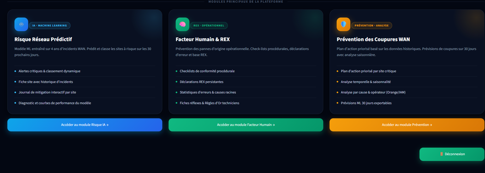
Le portail est destiné à la lecture rapide de la situation des 27 sites WAN. Il met en évidence 864 incidents analysés, 11 sites à risque élevé, la répartition des niveaux et les cinq sites critiques. Cette vue sert de point de départ à une réunion de pilotage ou à une décision de priorisation.
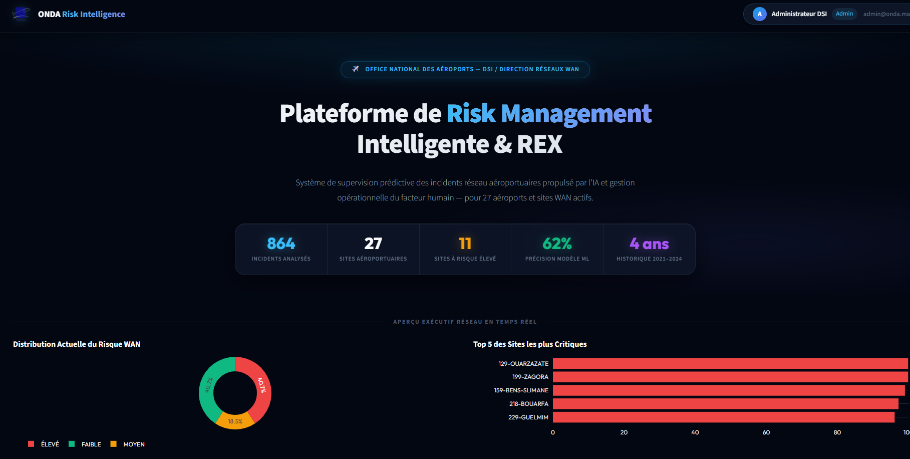
L'écran de connexion rappelle que l'outil est destiné au personnel ONDA autorisé. En production, ce contrôle devra être complété par une gestion centralisée des identités, des rôles, des journaux d'audit et une politique de conservation des traces.
La vue d'ensemble affiche le nombre total d'incidents historiques, les sites à risque élevé ou moyen et le score moyen. Le classement permet de comparer les sites sur une même échelle et d'identifier ceux qui doivent être examinés en premier.
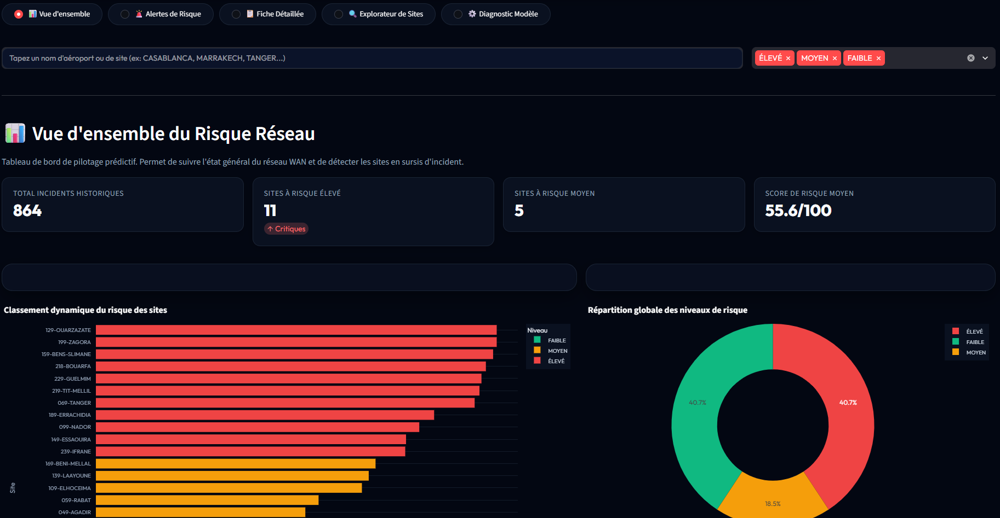
Chaque alerte présente le niveau, le score, les incidents récents, l'indisponibilité et la date du dernier incident. Les raisons produites par le modèle rendent le score plus interprétable et facilitent la préparation d'une action de mitigation.
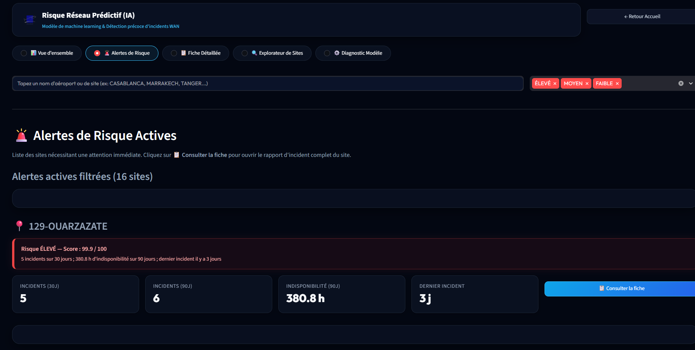
La fiche détaillée donne accès à la situation d'un site, ses catégories d'incidents, son historique mensuel et les actions d'intervention enregistrées.
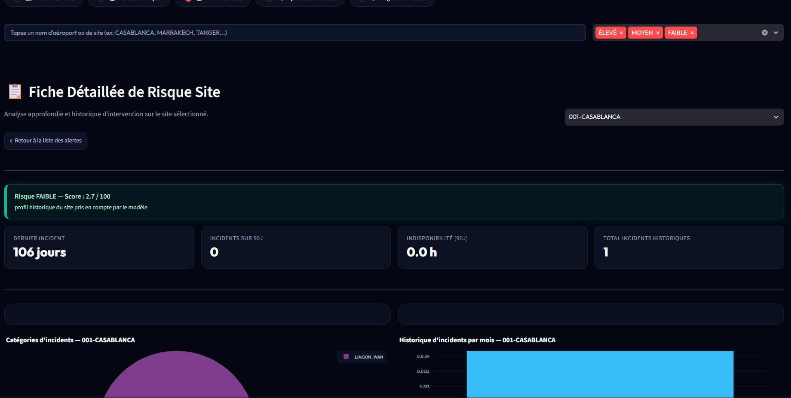
L'explorateur élargit l'analyse à tous les sites, y compris ceux dont le score est faible, afin de conserver une référence et de repérer les évolutions.
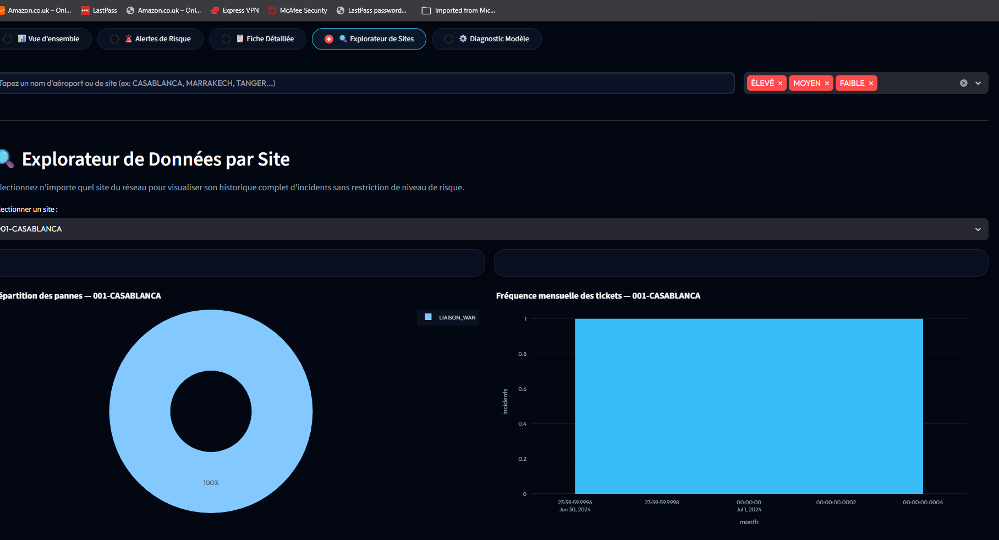
| Indicateur | Utilité pour l'ingénieur |
|---|---|
| Score et niveau | Déterminer la priorité relative du site. |
| Dernier incident | Mesurer la récence et vérifier une éventuelle répétition. |
| Incidents/90 jours | Observer la tendance récente. |
| Indisponibilité | Estimer l'impact opérationnel. |
| Catégorie/opérateur | Orienter l'action vers réseau, énergie ou prestataire. |
La vue de diagnostic rend visibles les métriques de validation, la matrice de confusion et les courbes comparant le risque prévu au taux observé. Elle permet de discuter les performances avec les ingénieurs plutôt que de traiter la sortie du modèle comme une vérité absolue.
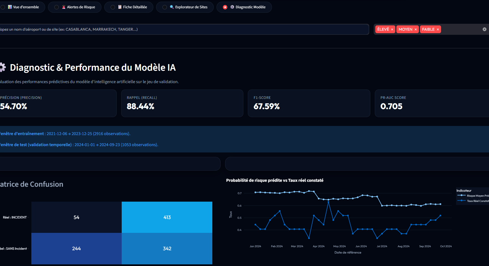
La check-list vérifie la sauvegarde de configuration, l'intégrité du firmware, la fenêtre horaire, la notification de la supervision, le rollback et la connectivité post-rechargement. Une non-conformité déclenche un signal de risque humain.
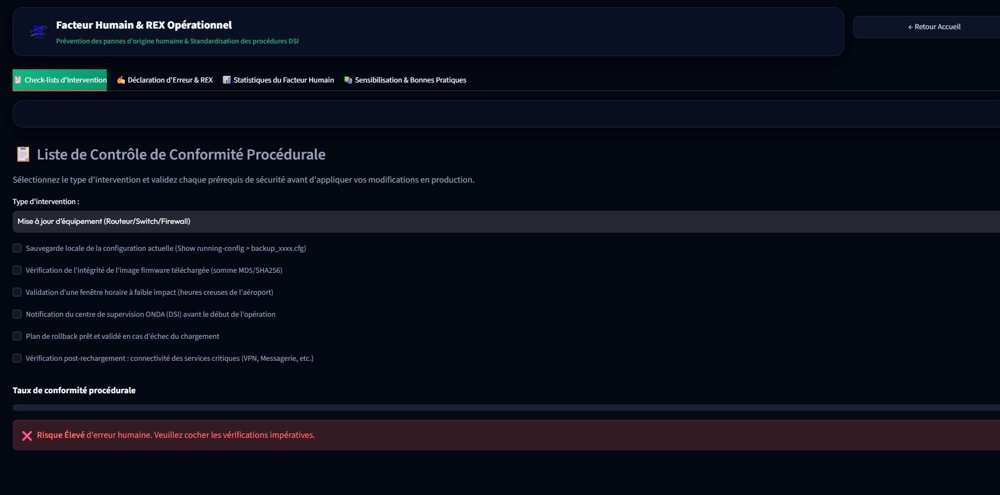
Le plan agrège les causes, les opérateurs, la durée des coupures et les signaux ML afin de produire une liste d'actions : vérifier une UPS, planifier une mission, escalader un ticket ou renforcer la surveillance.
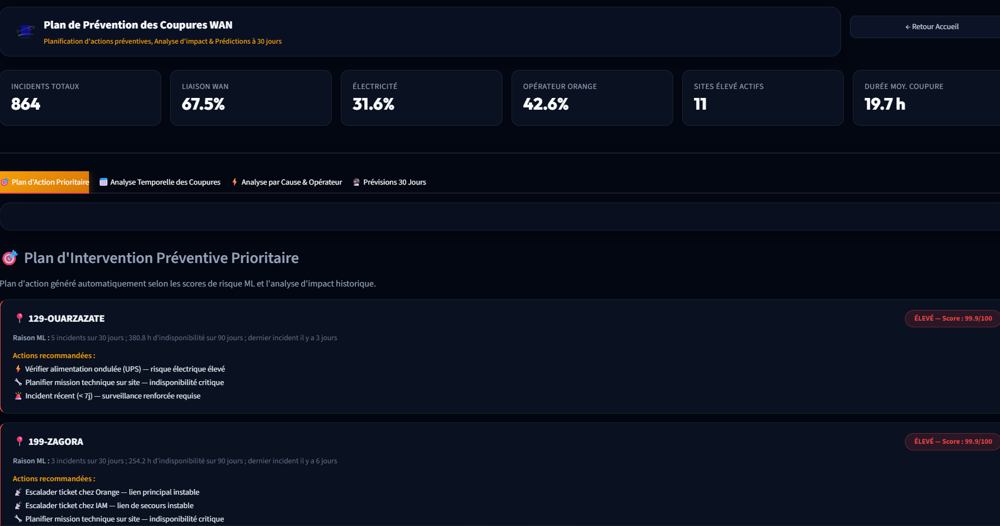
Le CyberRange complète la prédiction WAN par une capacité de test active, isolée et réinitialisable.
Le laboratoire ne sert pas à attaquer l'infrastructure ONDA. Il sert à vérifier que les équipes savent reconnaître des traces, produire des signatures et appliquer des mesures de durcissement. Les figures proviennent du rapport CyberRange fourni et sont intégrées comme preuves documentaires de la simulation.
Le laboratoire repose sur deux machines virtuelles reliées par VirtualBox : Kali Linux 2024 comme machine d'analyse et Metasploitable 2 comme cible volontairement vulnérable. Les captures montrent le segment 192.168.243.0/24, Kali en 192.168.243.129 et la cible en 192.168.243.128, avec l'indication qu'il n'existe aucun accès Internet.
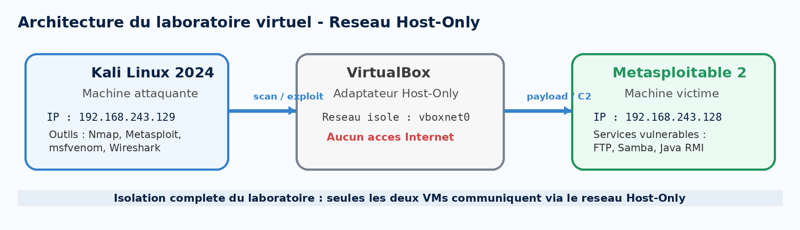
La reconnaissance permet d'identifier les ports, services et versions exposés dans la cible de test. Les captures montrent notamment FTP, SSH, Telnet, Samba, Java RMI, MySQL et HTTP. L'objectif défensif est de comparer l'inventaire observé avec la surface attendue et de prioriser la réduction des services inutiles.
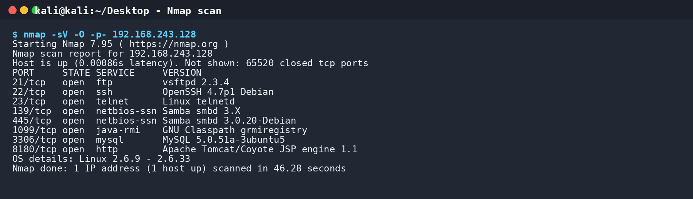
Le rapport CyberRange documente notamment l'étude de vsftpd 2.3.4 (CVE-2011-2523), Samba 3.0.20 (CVE-2007-2447) et d'un service Java RMI vulnérable. Les noms des vulnérabilités servent à contextualiser le laboratoire ; aucune commande offensive n'est reproduite dans ce rapport.
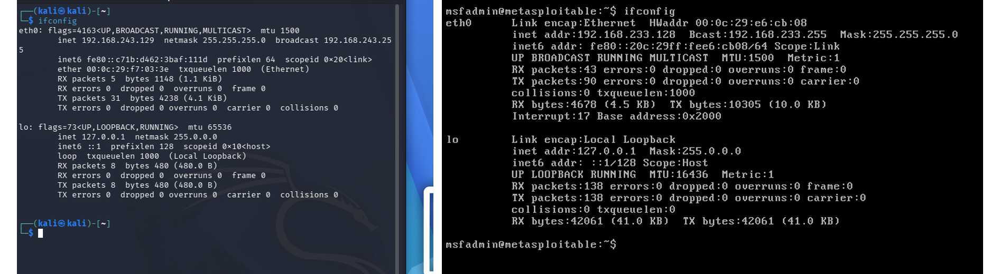
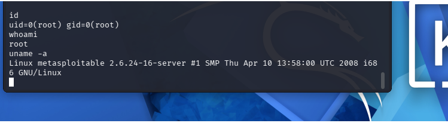
Wireshark est utilisé pour documenter le flux lié au scénario. La capture fournie montre une communication entre 192.168.243.129 et 192.168.243.128 sur le port 4444, avec transfert d'une étape de Meterpreter et réponse du canal de commande. En contexte défensif, l'adresse, le port, la direction et le rythme des flux peuvent devenir des indicateurs à corréler dans un IDS ou un SIEM.
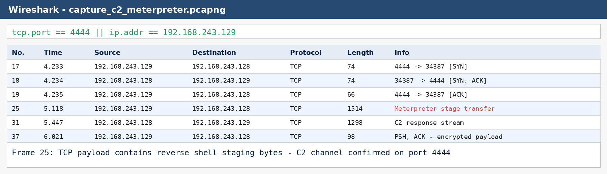
L'analyse statique d'un artefact de test permet d'identifier son format, ses imports, ses fonctions, ses chaînes et ses appels sensibles. Les vues de Ghidra constituent des éléments d'interprétation ; elles doivent être confirmées par le contexte et ne suffisent pas, seules, à conclure à une compromission.
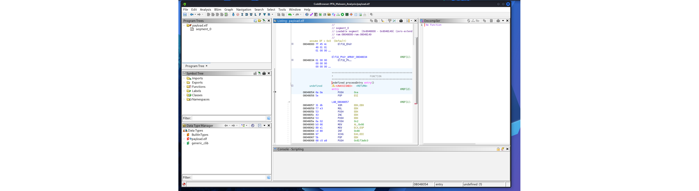
Les éléments extraits peuvent être structurés dans une fiche d'incident : adresse et port de commande, hash de l'artefact, nom de fichier, chaînes caractéristiques, imports sensibles, séquence de connexion et métadonnées PCAP.
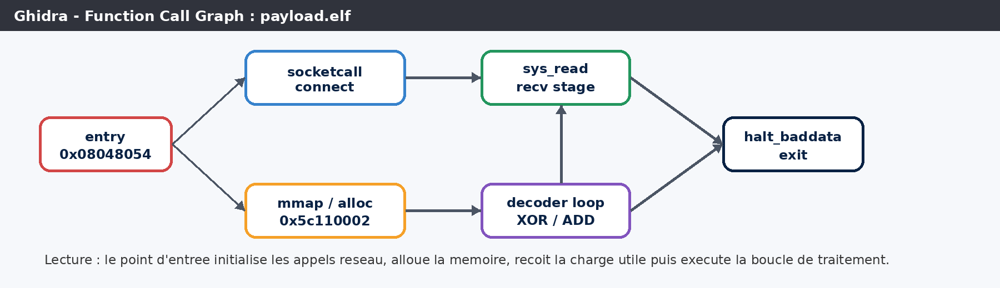
| Observable | Source | Usage défensif |
|---|---|---|
| Flux sortant vers IP/port inhabituel | Wireshark / IDS | Corrélation, blocage contrôlé, enquête. |
| Hash et nom de charge utile | Analyse de fichier | Recherche dans les postes et conservation de preuve. |
| Imports ou appels mémoire/réseau | Ghidra | Priorisation et enrichissement IOC. |
| Version de service vulnérable | Nmap / inventaire | Mise à jour, désactivation ou segmentation. |
Les résultats de l'analyse alimentent une règle YARA de reconnaissance d'artefact et des règles Snort/IDS de détection du flux de commande ou de la séquence de staging. Les captures montrent une exécution de contrôle où deux alertes sont générées et où le fichier PCAP est traité avec succès.
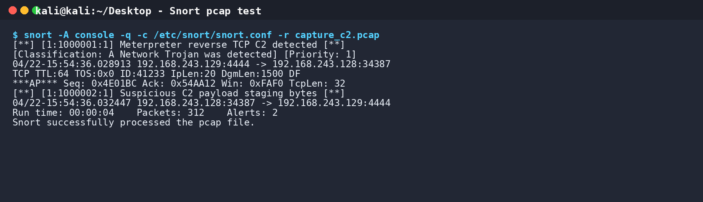
Les mesures sont regroupées par cause : retirer ou mettre à jour les services vulnérables, désactiver les partages inutiles, limiter les connexions sortantes, segmenter les environnements et activer la surveillance IDS/SIEM. La remédiation est reliée à l'observable et ne se limite pas à une recommandation générique.
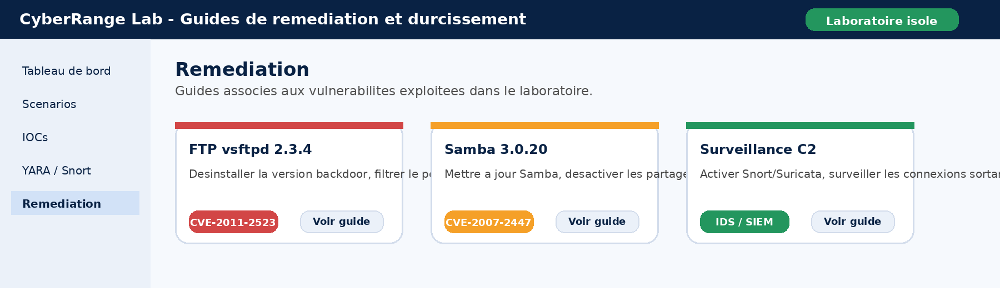
| Phase | Outil | Artefact produit | Réutilisation |
|---|---|---|---|
| Reconnaissance | Nmap | Ports, versions, CVE | Inventaire et choix des contrôles. |
| Exploitation contrôlée | Metasploit | Session de test | Validation du scénario, jamais en production. |
| Flux C2 | Wireshark | PCAP et séquence TCP | IOC réseau et règle IDS. |
| Analyse | Ghidra | Fonctions, imports, hash | Règle YARA et enrichissement. |
| Détection | YARA / Snort | Alertes et signatures | Qualification de la supervision. |
| Remédiation | Guides techniques | Actions de durcissement | Réduction de surface et REX. |
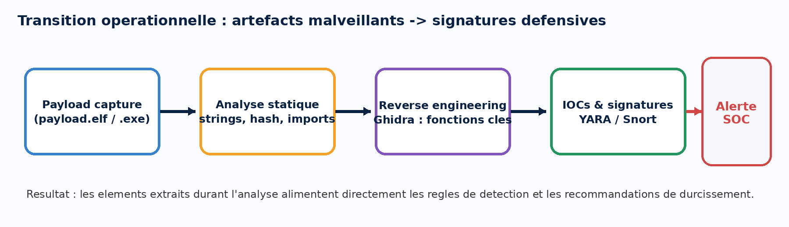
Nettoyage reproductible, dataset site-semaine et artefacts versionnables.
Scores, alertes explicables, fiches, opérateurs et plans d'action.
Lab isolé, traces PCAP, IOC, signatures et guides de remédiation.
Les évolutions prioritaires sont l'ajout d'un identifiant d'actif et de mesures de supervision, l'intégration des tickets et des changements, la comparaison de modèles, la calibration probabiliste et des seuils spécifiques par criticité de site. Une vue de corrélation entre risque de disponibilité et signaux cyber renforcerait ensuite la résilience.
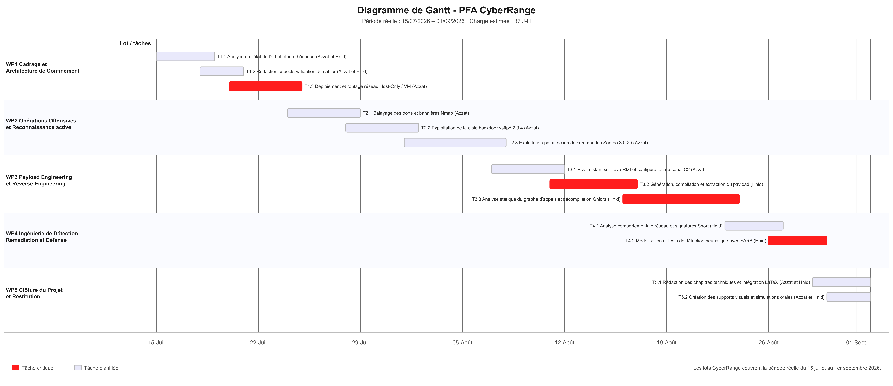
Ce projet a permis de concevoir une base de supervision prédictive orientée vers les risques de maintenance des liaisons WAN de l'ONDA. La préparation des données, le modèle de régression logistique, le score par site et les modules de visualisation transforment un historique d'incidents en priorités d'intervention compréhensibles.
L'apport du CyberRange élargit la démarche : il ajoute une capacité de simulation contrôlée, d'observation des traces, de production d'IOC et de validation de signatures. La fusion est cohérente sur le plan opérationnel : le risque WAN indique où concentrer l'attention, le laboratoire permet de tester les contrôles, et le REX conserve les enseignements.
La solution reste un prototype et devra être enrichie par les données d'actifs, les télémétries et les processus de gouvernance de l'ONDA. Elle fournit toutefois une architecture claire pour passer d'une réaction après incident à une résilience mesurable.
Une alerte est utile lorsqu'elle est expliquée, vérifiée, transformée en action et réinjectée dans la connaissance collective.